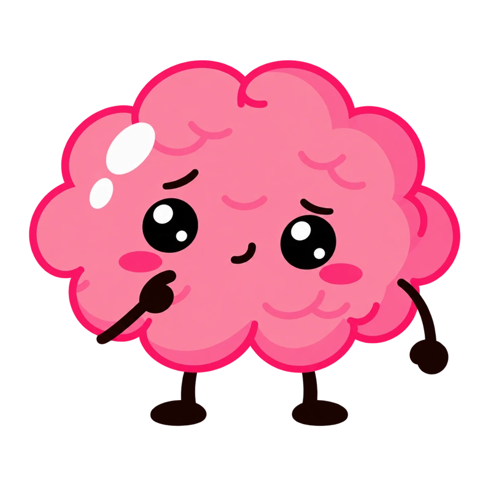

OH HEY, YOU FOUND POPPY
Start where
you are.
Got a lot on your mind and something you want to do? Poppy is here to make that first step feel a little easier.
You don’t need to have it all figured out.
One thing at a time.You’ve got this ♡
psst… tap to say hi!
SOUND FAMILIAR?
Too many tabs open?
Same.
A big goal can get lost in a busy day. Sometimes it helps to stop and work out what’s actually getting in the way.

Start with one thing you can finish. It can be much smaller than you think.
Pick the thought that feels like you.
KEEP IT SIMPLE
Make one small
thing happen.
This is the idea behind Poppy. Know why something matters, give it a little room in your week, then see how it went.
TRY THIS
Finish this sentence: I want to do this because...
COME AS YOU ARE
There’s room
for you here.
Like the idea of Poppy? Come join the group. This is your place to start.
Join the Poppy groupSend your request on WhatsApp.come on in ♡